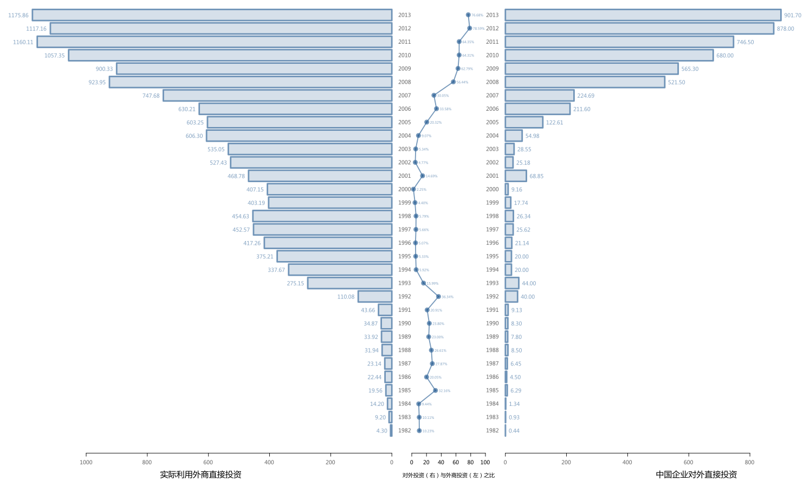

柱状图
| 文章分类: | 描述统计 |
|---|---|
| 创建时间: | 2013年4月 |
柱状图（bar chart）用于呈现频数或百分比。
基本要素
柱状图的基本要素包括三个：
- 水平分段：先按照数据的分类数目给水平轴分段。
- 竖直数值：确定单位竖直高度的代表的数值，并绘制标度轴。
- 绘制柱图：按照数据绘制竖直柱。

R 可以直接绘制柱状图：
barplot(vector)
变换图形
数值轴变化

媒体上常见的柱状图通常没有纵轴标度，而是直接将数值标记在竖直柱的顶端或顶端附近。
R 需要做些调整：
bar.plot <- barplot(vector, yaxt="n")
text(bar.plot, vector, labels=bar.label, pos=2)
pos 用于调整数值显示的相对位置。
纵横轴交换
柱状图的柱可以绘制为水平柱，由横轴标度数值。
barplot(vector, horiz=TRUE)
衍生图形
累加柱状图
以 R 的示例生成的图为例展示累加柱状图：

数据需是 matrix 类对象。
barplot(matrix)
比较柱状图
以 R 的示例生成的图为例展示比较柱状图：

barplot(matrix, beside=TRUE)
实际应用
项目中需要比较IFDI和OFID之间的状况，变换柱状图的方向，用比值的折线图作两个柱状图的分隔，实现左右式的柱状图对比效果。
{kind=link}
oldpar <- par(mfrow=c(1,3),lwd=3)
par(fig=c(0,0.45,0,1), mar=c(4, 0, 0, 2), new=TRUE)
bar.plot <- barplot(dt[,2], names.arg=rownames(dt), col="#33669933",border="#336699AA",
xlim=c(1250,0), main="", xlab="实际利用外商直接投资",
horiz=TRUE, las=1, yaxt="n", xaxt="n", cex.lab=1.5)
axis(side=4, at=bar.plot, labels=1982:2013, tick=FALSE, las=1, col.axis="#00000099")
axis(side=1, at=seq(0,1000,200), labels=seq(0,1000,200), las=1, col.axis="#00000099")
bar.tick <- dt[,2]
bar.label <- formatC(bar.tick, format = "f", digits = 2)
text(bar.tick, bar.plot-0.1, labels=bar.label, pos=2, col="#33669999")
par(fig=c(0.44,0.56,0,1), mar=c(4, 2, 0, 2), new=TRUE)
plot(dt[,3]*100, 1982:2013, ylim=c(1981.6,2013.4), xlim=c(0,100),type="n",
xlab="对外投资（右）与外商投资（左）之比",ylab="",yaxt="n", bty="n", cex.lab=1)
lines(dt[,3]*100, 1982:2013, col="#336699AA", lwd=2)
points(dt[,3]*100, 1982:2013, col="#336699AA", pch=19, lwd=5)
pt.label <- paste0(formatC(dt[,3]*100, format = "f", digits = 2), "%")
text(dt[,3]*100, 1982:2013-0.1, labels=pt.label, pos=4, cex = 0.6, col="#33669999")
par(fig=c(0.55,1,0,1),mar=c(4, 2, 0, 0),new=TRUE)
bar.plot <- barplot(dt[,1], names.arg=rownames(dt), col="#33669933",border="#336699AA",
xlim=c(0,1250), main="", xlab="中国企业对外直接投资",
horiz=TRUE, las=1, yaxt="n", xaxt="n", cex.lab=1.5)
axis(side=2, at=bar.plot, labels=1982:2013, tick=FALSE, las=1, col.axis="#00000099")
axis(side=1, at=seq(0,800,200), labels=seq(0,800,200), las=1, col.axis="#00000099")
bar.tick <- dt[,1]
bar.label <- formatC(bar.tick, format = "f", digits = 2)
text(bar.tick, bar.plot-0.1, labels=bar.label, pos=4, col="#33669999")
par(oldpar)